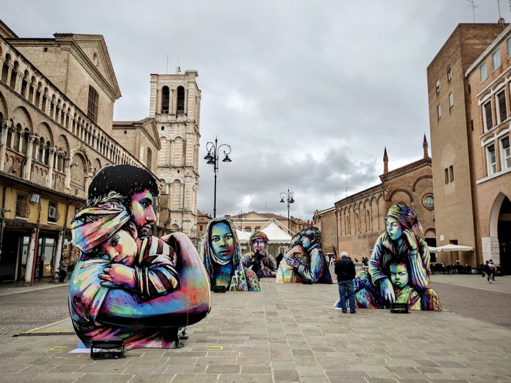

Alice Pasquini
Alice Pasquini, nata a Roma nel 1980, è una street artist, scenografa e illustratrice italiana. Ha studiato arte a Londra, Madrid e Roma. Alice crea personaggi, bambini o donne, con linee sottolineate da decine di tratti di matita e pennello. Il suo obiettivo principale è di trasmettere la bellezza dei legami umani e raccontare storie che parlino di empatia, di emozioni condivise di attimi di poesia nella vita quotidiana. Rappresenta sopratutto donne, perchè gli piacce esplorare la forza, la fragilità e la complessità dell'universo feminile. Questa ricerca varia lontana dallo stereotipo donna-oggetto la ha portatoa diventare la piu famosa artist italiana di street art con 100 000 followers in instagram. La sua fama la ha portata a creare in Mosca, Singapore, Amsterdam, Londra, Berlino, Buenos Aires,Barcellona, Saigoni... ma guarda la sua preferenza per Roma dovè ci sono la majorità delle sue opere.

Questo progetto, NOT A TARGET è stato realizzato con i Medici Senza Frontiere e è uno dei suo preferito progetto. Questa opera ci mostra la dura realità dagli indiviudi nelle zone di conflitto. Ogni murale è accompagnato da storie e testimonianze dettagliate, che offrono uno sguardo profondo sulla vita di coloro che sono stati colpiti dalla guerra.
